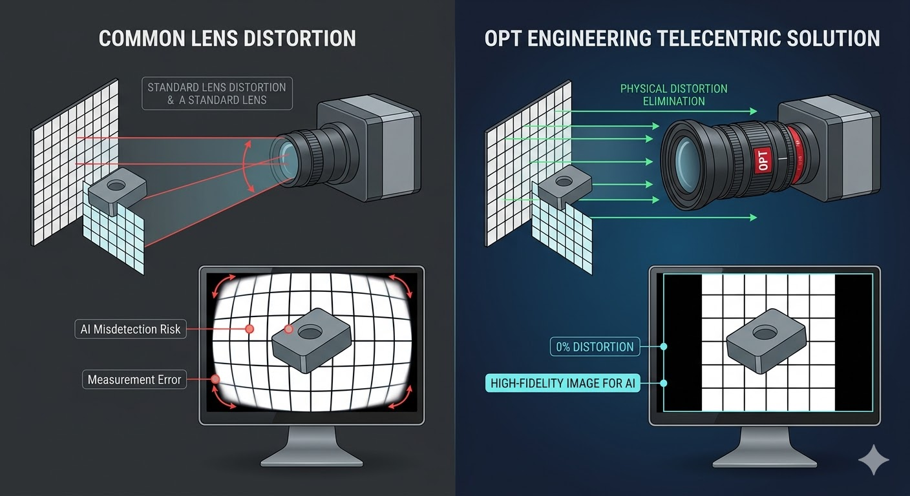
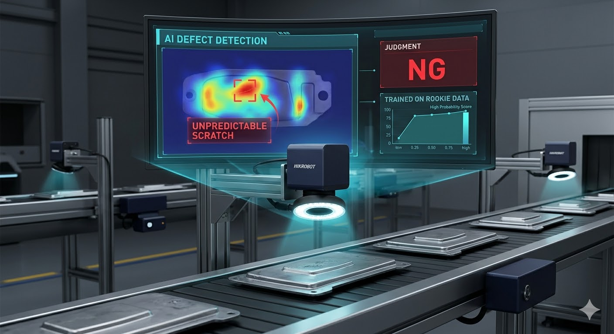

周辺歪みや遠近感による寸法の変化は、AIの誤判定を招く最大の要因です。テレセントリックレンズは、光軸に対し平行な光のみを捉えることで、ワークの高さに左右されない「物理的な正解」を導き出します。
ソフト側の補正に頼らず、AIが最も判断しやすい高品位な生データを担保。これにより「人の目による再確認」という無駄を根本から排除します。

世界規模の量産背景により、高性能カメラを既存メーカーの数分の一のコストで供給。これまで予算的に断念していた全ラインへの「面での自動化」を可能にします。
AI処理系を内蔵したスマートカメラは、複雑な配線を不要にし、狭小スペースへの極限実装と人員削減を同時に完遂します。
